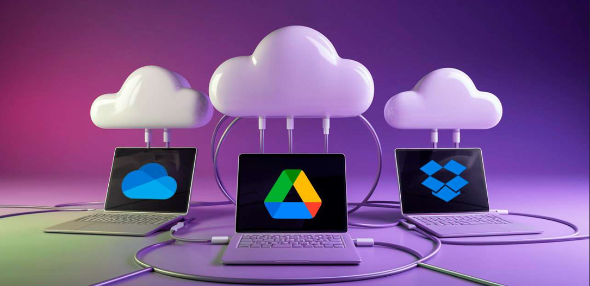

La economía circular y la digitalización no son solo conceptos teóricos: forman parte del trabajo diario de un técnico en Sistemas Microinformáticos y Redes (SMR). A través de pequeñas acciones y decisiones técnicas, es posible ahorrar energía, reducir residuos y hacer un uso más responsable de los recursos tecnológicos de una empresa.
A continuación, se presentan prácticas concretas que un técnico puede aplicar directamente en su entorno laboral.
1. Reparación de equipos en lugar de sustitución
Un técnico SMR puede prolongar la vida útil de ordenadores, portátiles y periféricos mediante acciones como:
- Sustituir discos duros mecánicos por SSD.
- Ampliar la memoria RAM.
- Reparar o cambiar fuentes de alimentación.
- Realizar limpieza interna para mejorar la refrigeración.
- Reemplazar componentes menores (teclados, baterías, bisagras, pantallas, etc.).
Impacto sostenible: se reduce la cantidad de equipos desechados y se aprovechan mejor los recursos ya existentes.
2. Reacondicionamiento de ordenadores
Muchos equipos que no son aptos para tareas exigentes aún pueden reutilizarse para usos básicos. Para ello se puede:
- Instalar sistemas operativos ligeros.
- Realizar una restauración física (limpieza, cambio de pasta térmica, reajustes).
- Reconfigurar los equipos para tareas simples como ofimática, navegación o puestos de terminal ligero.
Impacto: disminución del volumen de RAEE y máximo aprovechamiento del hardware disponible.
3. Gestión responsable de residuos electrónicos (RAEE)
Un técnico SMR debe:
Las buenas prácticas en RAEE forman parte de la responsabilidad del técnico:
- Clasificar y separar adecuadamente cables, placas, baterías, periféricos, etc.
- Entregar el material en puntos de reciclaje autorizados.
- Diferenciar componentes reutilizables de los que deben reciclarse.
- Evitar que dispositivos con sustancias peligrosas acaben en la basura común.
Impacto: recuperación de materiales valiosos y reducción de contaminación.
4. Implantación de equipos energéticamente eficientes
El técnico puede contribuir al ahorro energético mediante:
- Configuración de planes de energía, suspensión y apagado automático.
- Activación de “Wake on LAN” para evitar PCs encendidos innecesariamente.
- Sustitución selectiva de equipos muy antiguos por otros más eficientes, solo cuando sea imprescindible.
- Instalación de regletas inteligentes que eliminen consumos fantasma.
Impacto: menor gasto eléctrico y reducción de emisiones.
5. Uso de virtualización
La virtualización permite que varios sistemas operativos funcionen sobre una única máquina física.
Aplicaciones para un técnico:
- Crear servidores virtuales sin necesidad de comprar hardware adicional.
- Probar software y configuraciones sin usar equipos físicos.
- Utilizar escritorios virtuales para reducir la renovación constante de PCs.
Impacto: menos dispositivos físicos y menor consumo energético.
6. Migración a soluciones en la nube (Cloud)
El técnico puede aplicar la nube como herramienta sostenible mediante:
- Configuración de almacenamiento online (OneDrive, Google Drive, Nextcloud).
- Implementación de copias de seguridad en la nube.
- Sustitución de servidores locales por servicios cloud cuando sea viable.
- Uso de aplicaciones online en lugar de instalar software pesado en cada equipo.
Impacto: menos hardware local, menos mantenimiento y menos residuos tecnológicos.

7. Inventario y monitorización de equipos
Mediante herramientas como GLPI, OCS Inventory o Zabbix es posible:
- Detectar equipos en mal estado o próximos al fallo.
- Prevenir averías antes de que ocurran (mantenimiento predictivo).
- Identificar dispositivos que no se utilizan o están infrautilizados.
- Gestionar repuestos y componentes de manera eficiente.
Impacto: se evitan compras innecesarias y se optimiza la utilización de recursos.
8. Fomento del uso responsable
El técnico también puede promover buenas prácticas como:
- Apagar los equipos al finalizar la jornada.
- Reducir el uso de impresoras y papel.
- Utilizar videoconferencias de forma eficiente.
- Reutilizar periféricos (monitores, teclados, ratones) siempre que sea posible.
Impacto: mejora cultural dentro de la empresa y reducción del consumo de recursos.
Conclusión
Las aplicaciones prácticas demuestran que la sostenibilidad en el entorno TIC es totalmente compatible con el trabajo diario de un técnico SMR. Mediante reparaciones, reacondicionamiento, virtualización, cloud y buenas prácticas energéticas, es posible reducir costes, minimizar residuos y avanzar hacia una empresa más digital, eficiente y respetuosa con el medio ambiente.